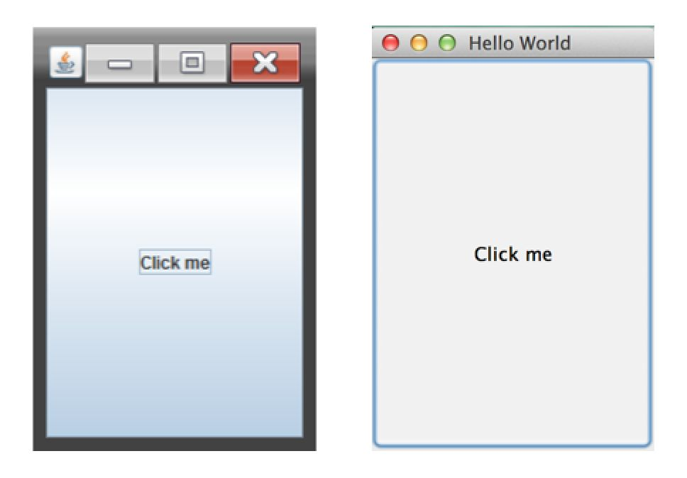
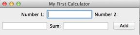
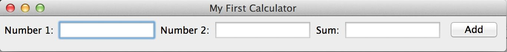
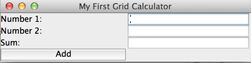
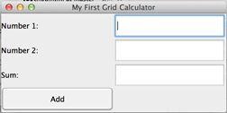
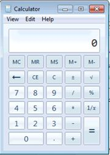
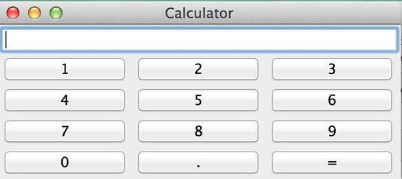
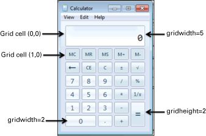
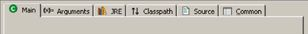

Originally Java offered a pretty Figure 8-1 ). You can also create a Swing GUI application with a cross-platform look and feel (see Nimbus at http://docs.oracle.com/javase/tutorial/uiswing/lookandfeel/nimbus.html
Today developers
Swing JPanel or JFrame) that support various layouts that enable controls to be arranged as you or a graphic designer envision. In this lesson you use some of the Swing components while creating a UI for a simple desktop calculator.
A complete http://bit.ly/1o7JeuE
Swing classes javax.swing package, and the process of creating a UI comes down to extending some of these classes to display the UI and respond to various user- and system-generated events. You create a top-level window with a title and border by instantiating the class JFrame, as in Listing 8-1 .
Listing 8-1 :
import javax.swing.JFrame;
import javax.swing.JButton;
public class HelloWorld extends JFrame {
public static void main(String[] args) {
JFrame myWindow = new HelloWorld();
// Creating and adding a button to the container
JButton myButton = new JButton ("Click me");
myWindow.add(myButton);
myWindow.setSize(200,300);
myWindow.setTitle("Hello World");
myWindow.setVisible(true);
}
}
The class HelloWorld creates and adds a button to the container, sets the size and title of the window, and makes it visible. JFrame is an example of a container that can hold UI controls, which must be instantiated first and then added to the container. Run this program, and it shows a small window that looks like Figure 8-1 (the left image shows the Windows OS version, and the right one was taken from Mac OS).
The code in Figure 8-1 doesn’t specify the size of the button, where to put it, or whether there should be space between the components and the borders. Without layout instructions, the entire empty space in Figure 8-1 will be occupied by one huge button.

Figure 8-1 :
Run the earlier HelloWorldprogram and try to click the window’s Close button. It doesn’t work. The JRE sent an event to close the window, but the program didn’t have event-handling code for this.You find out how to add it in the next lesson, but meanwhile you can make the window close by adding the following line to HelloWorld.java:
myWindow.setDefaultCloseOperation(JFrame.EXIT_ON_CLOSE);
Usually JFrame includes some JButton, JTable, and JList. Java Swing comes layout managers that help you arrange all these controls appropriately. For example, a sample coding process for creating a JFrame containing JPanel can go like this:
Create a JPanel.
Assign a layout manager to it.
Instantiate some Swing controls and add them to the panel.
Add the panel to the top-level container—JFrame—by calling the setContentPane() method.
Set the frame’s size and make it visible.
You events , such as a click on a button. This lesson covers the basics of displaying UI components; Lesson 9 is about writing code for responding to events.
The simplest FlowLayout, which allocates all components being added to the container horizontally. When there’s no room for the next component, FlowLayout uses the next row, and the process repeats.
The best way to learn layout management is by trying to use it in practice. You’re going to create a UI for a simple calculator that can accept two numbers and display the result. Create a new Eclipse project called Lesson8 and a new class called SimpleCalculator with the following code:
Listing 8-2 :
public class SimpleCalculator {
public static void main(String[] args) {
// Create a panel
JPanel windowContent= new JPanel();
// Set a layout manager for this panel
FlowLayout fl = new FlowLayout();
windowContent.setLayout(fl);
// Create controls in memory
JLabel label1 = new JLabel("Number 1:");
JTextField field1 = new JTextField(10);
JLabel label2 = new JLabel("Number 2:");
JTextField field2 = new JTextField(10);
JLabel label3 = new JLabel("Sum:");
JTextField result = new JTextField(10);
JButton go = new JButton("Add");
// Add controls to the panel
windowContent.add(label1);
windowContent.add(field1);
windowContent.add(label2);
windowContent.add(field2);
windowContent.add(label3);
windowContent.add(result);
windowContent.add(go);
// Create the frame and add the panel to it
JFrame frame = new JFrame("My First Calculator");
// Add the panel to the top-level container
frame.setContentPane(windowContent);
frame.setDefaultCloseOperation(JFrame.EXIT_ON_CLOSE);
// set the size and make the window visible
frame.setSize(400,100);
frame.setVisible(true);
}
}
Compile Figure 8-2 .
This may not be the best-looking calculator, but it demonstrates the use of FlowLayout. In the next section you make it look better with the help of more suitable layout managers.

Figure 8-2 :
Grab the corner of the window and make it wider. You see how FlowLayout starts reallocating controls, trying to fill the new area. If you make the window wide enough, all the components fit in one row, as in Figure 8-3 .

Figure 8-3 :
Even though you can enforce exact coordinates and sizes for each window component, Swing has layout managers that can maintain relative positions for all controls without assigning strict positions to them. Layout managers ensure that the content of a container looks nice regardless of the current window size. The FlowLayout is not about looking nice, though. It’s about showing all visual components based on the
Swing offers the following layout managers:
FlowLayoutGridLayoutBoxLayoutBorderLayoutCardLayoutGridBagLayout
To setLayout(), as you did with the class SimpleCalculator in Listing 8-2 .
This layout
When the current row is filled, the rest of the components go to the next row, and so on. Components can be added to the container from left to right or from right to left according to the container’s componentOrientation property. If a user changes the size of the window, this layout manager reflows the components, which changes the GUI as illustrated in Figure 8-2 . Indeed, FlowLayout is not the best choice for the calculator. Let’s try something different.
The class java.awt.GridLayout enables
So far your calculator has seven components: three labels, three text fields, and a button. You may arrange them as a grid of four rows and two columns (one cell stays empty) by creating an instance of GridLayout like this:
GridLayout gr = new GridLayout(4,2);
You can also assign some horizontal and vertical spaces of, for example, five pixels, between the cells:
GridLayout gr = new GridLayout(4,2,5,5);
Replace FlowLayout with GridLayout in Listing 8-2 and the calculator looks a little prettier. Create and compile a new class called SimpleCalculatorGrid (see Listing 8-3 ).
Listing 8-3 :
import javax.swing.*;
import java.awt.GridLayout;
public class SimpleCalculatorGrid {
public static void main(String[] args) {
JPanel windowContent= new JPanel();
// Set the layout manager for the panel
GridLayout gl = new GridLayout(4,2);
windowContent.setLayout(gl);
JLabel label1 = new JLabel("Number 1:");
JTextField field1 = new JTextField(10);
JLabel label2 = new JLabel("Number 2:");
JTextField field2 = new JTextField(10);
JLabel label3 = new JLabel("Sum:");
JTextField result = new JTextField(10);
JButton go = new JButton("Add");
// Add controls to the panel
windowContent.add(label1);
windowContent.add(field1);
windowContent.add(label2);
windowContent.add(field2);
windowContent.add(label3);
windowContent.add(result);
windowContent.add(go);
// Create the frame and add the panel to it
JFrame frame = new JFrame("My First Grid Calculator");
frame.setContentPane(windowContent);
frame.setDefaultCloseOperation(JFrame.EXIT_ON_CLOSE);
// set the size and display the window
frame.setSize(400,100);
frame.setVisible(true);
}
}
SimpleCalculatorGrid to see a calculator that looks a little better than before (see Figure 8-4 ).

Figure 8-4 :
Try to resize this window; controls grow with the window, as shown in Figure 8-5 , but their relative positions won’t change. Note that with GridLayout all cells of the grid have the same width and height.

Figure 8-5 :
The java.awt.BorderLayout divides a container into South, West, North, East, and Center areas. The North area stays on top of the window, South at the bottom, West on the left, and East on the right. For example, in the calculator shown in Figure 8-6 , a text field that displays numbers is located in the North area, and the panel p2 is in the West.

Figure 8-6 :
You can use the following code to create a BorderLayout and place a text field there:
BorderLayout bl = new BorderLayout();
this.setLayoutManager(bl);
JTextField txtDisplay = new JTextField(20);
this.add(BorderLayout.NORTH, txtDisplay);
You are not required to have window controls in all five areas. If you need only North, Center, and South areas, the Center area becomes wider because you are not going to use the East and West areas. I use a BorderLayout later in this lesson in the next version of the calculator: Calculator.java.
BorderLayout is a default layout manager for content panes.
Do you think that GridLayout will Figure 8-6 ? Unfortunately, it won’t, because cells have different sizes there — the text field is wider than the buttons. You can, however, combine layout managers by using panels that have their own layout managers.
You GridBagLayout, which is explained later. In the meantime, you can create a simpler version of it by combining layout managers you know. The end result looks like Figure 8-7 .

Figure 8-7 :
Create a new class, Calculator, as per Listing 8-4 , and run the program. Read the program comments; you should be able to understand how the code works by reading the comments, shouldn’t you? Running this program shows the calculator, as shown in Figure 8-7 .
Listing 8-4 :
import javax.swing.*;
import java.awt.GridLayout;
import java.awt.BorderLayout;
public class Calculator {
// Declare all calculator's components.
JPanel windowContent;
JTextField displayField;
JButton button0;
JButton button1;
JButton button2;
JButton button3;
JButton button4;
JButton button5;
JButton button6;
JButton button7;
JButton button8;
JButton button9;
JButton buttonPoint;
JButton buttonEqual;
JPanel p1;
// Constructor creates the components
// and adds them to the frame using combination of
// Borderlayout and Gridlayout
Calculator(){
windowContent= new JPanel();
// Set the layout manager for this panel
BorderLayout bl = new BorderLayout();
windowContent.setLayout(bl);
// Create the display field and place it in the
// North area of the window
displayField = new JTextField(30);
windowContent.add("North",displayField);
// Create
javax.swing.BoxLayout allows FlowLayout manager, when the window with the BoxLayout is resized, its controls do not wrap. And unlike with GridLayout, with BoxLayout, window controls can have different sizes.
The next two lines of code assign BoxLayout with vertical alignment to JPanel. To make this code shorter, I have not declared a variable to store a reference to the object BoxLayout, but rather create an instance of this object and immediately pass it to the method setLayout() as an argument.
JPanel p1= new JPanel();
setLayout(new BoxLayout(p1, BoxLayout.Y_AXIS));
If you just add several buttons to the panel p1, they all display one under another.
You can use combinations of various containers implementing horizontal or vertical BoxLayout to build a fairly sophisticated UI. Think of a front page of a game that has to have several items next to each other on the top of the window, some controls located vertically on the left sidebar, and the rest of the window’s real estate allocated for the main battlefield. You can use BorderLayout having a panel with a horizontal BoxLayout on the North, and a panel with vertical BoxLayout on the West.
The next section shows you a sophisticated yet more verbose GridBagLayout, but you should always try to see if the BoxLayout can do the job and use it, if possible.
In java.awt.GridBagLayout layout manager instead of combining panels with different layouts. GridBagLayout is an advanced grid that allows the creation of cells of different sizes. GridBagLayout works in combination with another class called GridBagConstraints.
Constraints are just attributes of a cell, and you have to set them for each cell separately. All constraints for a cell have to be set before you place a component in the cell. For example, one of the constraint’s attributes is called gridwidth (see Figure 8-8 ). It enables you to make a cell as wide as several other cells. The display field in the example is as wide as five other cells. The top-left cell has the coordinates 0,0.

Figure 8-8 :
When working with the grid layout you should create an instance of the constraint object first, and set the values to its properties. Then you can add a UI component to the cell with specified coordinates in your container. After that you repeat the procedure: populate the same instance of GridBagConstraints with properties of another cell and add it to the container and so on.
The code sample in Listing 8-5 is heavily sprinkled with comments to help you understand how to use GridBagLayout. While working on this lesson’s assignment you’ll be using this code.
Listing 8-5 :
// Set the GridBagLayout for the window's content pane
GridBagLayout gb = new GridBagLayout();
this.setLayout(gb);
// Create an instance of the GridBagConstraints
// You'll have to repeat these lines for each component
// that you'd like to add to the grid cell
GridBagConstraints constr = new GridBagConstraints();
//setting constraints for the Calculator's displayField:
// x coordinate in the grid
constr.gridx=0;
// y coordinate in the grid
constr.gridy=0;
// this cell has the same height as other cells
constr.gridheight =1;
// this cell is as wide as 5 other ones
constr.gridwidth= 5;
// fill all space in the cell
constr.fill= constr.BOTH;
// proportion of horizontal space taken by this
// component
constr.weightx = 1.0;
// proportion of vertical space taken by this component
constr.weighty = 1.0;
// position of the component within the cell
constr.anchor=constr.CENTER;
displayField = new JTextField();
// set constraints for this field
gb.setConstraints(displayField,constr);
// add the text field to the window
windowContent.add(displayField);
java.awt.CardLayout manager to create a component that shows one panel at a time, such as the tabbed folder in Figure 8-9 .

Figure 8-9 :
When the user clicks a tab, the content of the window changes. In fact, all the panels needed for this screen are already preloaded and lie on top of each other. When the user clicks a tab, the program just brings this “card" to the top and makes the other “cards" invisible. The tabbed folder here was used for illustration; the Swing library includes a ready-to-go component for windows with tabs, called JTabbedPane.
If you want a null to setLayout():
windowContent.setLayout(null);
The next code snippet shows how you can set a button’s width to 40 pixels and its height to 20, and place the button so its top-left corner is 100 pixels to the right of and 200 pixels down from the top-left corner of the window:
JButton myButton = new Button("New Game");
myButton.setBounds(100,200,40,20);
It’s not possible in the beginning of this lesson to get more information. Here’s a list of all the Swing widgets:
JButtonJScrollBar
JLabelJSlider
JCheckBoxJProgressBar
JRadioButtonJComboBox
JToggleButtonJList
JScrollPaneJTabbedPane
JSpinnerJTable
JTextFieldJToolTip
JTextAreaJTree
JPasswordFieldJViewPort
JFormattedTextFieldImageIcon
JEditorPane
You JMenu and JPopupMenu), pop-up windows, and frames inside other frames (JInternalFrame), and you can use the standard-looking windows (JFileChooser, JColorChooser, and JOptionPane).
Java used to come with an excellent demo application, SwingSet3, that showed all the available Swing components in action. Now it’s available online at https://swingset3.java.net